"Sticky The Stickman" (or just "Sticky") is the main character and antagonist of the "Sticky in: Fun with Numbers!"(/"SIFWN") series. He replaces Baldi.
Aliases
Sticky, Sticky The Stickman, Stick, Baldi, Old Ugly Stick's Brother.
Appearance
(SBA) Sticky appears as a poorly drawn stickman with short legs and a long body with long arms, he has misshapen eyes along with a huge mouth made out of text. He has three short fingers on each hand. His head alone makes up for around half his height.
(Paint.net/SIG/SGCU) Sticky appears as a poorly drawn stickman with long legs and a stubby body with short arms, he has big eyes along with a mouth made out of text. He has three short fingers on each hand.
(Paint 3D/Fangame) Sticky appears as a poorly modeled stickman with normal overall proportions but a massive head. He has large almost bug-like eyes and a big mouth made out of text. He has three long-ish fingers on each hand.
(3D Movie Maker) Sticky appears as a short and chibi stickman with large feet, short arms, and large facial features, the rest of his proportions are (although chibi) normal looking. He lacks hands or fingers.
Gallery
Sticky's BIG Adventure!
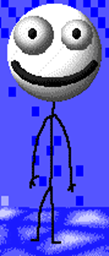
Paint.net SIFWN
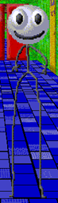
Sticky in: Gardening!
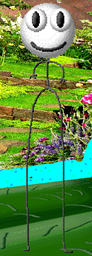
Sticky Goes Camping UNDERWATER!
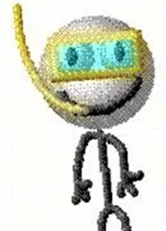
SIFWN Fangame
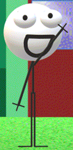
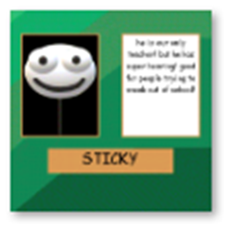
Paint 3D SIFWN
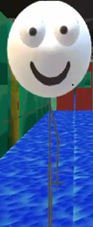
3D Movie Maker SIFWN
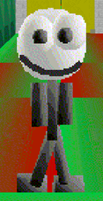
Other Appearances
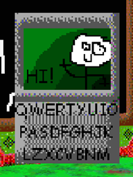
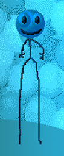
Trivia
Sticky has one known family member, "Old Ugly Stick".
Sticky's legs have progressively gotten longer each design update, up until his newest design.
Sticky appears with fully black eyes and two mouths on the "Super Phone" poster.
Sticky is apparently a "Weird Creature" due to the fact he is allowed in the "no people that are not weird creatures ALLOWED!" rooms.
Sticky has "super hearing!", which is apparently good for people trying to sneak out of the school.
Sticky is both the "best teacher!" and the "only teacher!".
Sticky owns the school.
Sticky is jealous of Old Ugly Stick because he "was born a split second before him.".
Sticky has Old Ugly Stick locked in "STICKY'S ROOM!" and apparently corrupts Old Ugly Stick more and more everyday as some form of bizarre punishment.
Sticky is most likely a mammal.
Sticky loves to garden.
Sticky is friends with ThatCoolModderGuy, Idiot88, and most of the other Baldi replacements.
Poster Descriptions
Paint.net SIFWN
"best teacher! because he has super hearing! perfect for people trying to sneak out of school!"
Paint 3D/Fangame SIFWN
"he is our only teacher! but he has super hearing! good for people trying to sneak out of school!"
3D Movie Maker SIFWN
"Great teacher due to his incredible hearing abilities! He can not only tell where any sound came from, but who made it too!"


 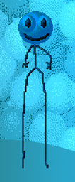
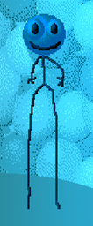